source(here::here("r", "my_functions.R"))Visualizing amounts
Under construction.
This page is a work in progress and may contain areas that need more detail or that required syntactical, grammatical, and typographical changes. If you find some part requiring some editing, please let me know so I can fix it for you.
Overview
This module demonstrates some ways to visualize amounts or quantities.
There are a few key concerns for any data presentation. First, you need to determine what data you want to present. Second, you must to determine how the user will use that information presented. For example, will they make comparisons and if so, what kind of comparisons will they make? The more complicated the data presented, the more comparisons can be made of course. Third, you must consider the interaction between the two, in essence how the data visualization may affect the goal the user has in mind. If you intend users to make a particular comparison, you want to present your data in a way that facilitates that process rather than hinder that process. Amounts could be presented in tabular form for instance when actual values are essential. Amounts could also be presented in visual form as a graphic of some form. Depending on the goals or the use of the data, creating separate plots that facilitate the interpretation process may be most optimal when the bias of the user competes with the aesthetic elements of the visualization (e.g., Gestalt principles).
A sub goal of the module is also to understand how to map variables in a data frame to geoms and corresponding aesthetics using {ggplot2}.
To Do
Readings
Reading should take place in two parts:
- Prior to class, the goal should be to familiarize yourself and bring questions to class. The readings from FoDV are conceptual and should facilitate readings from EGDA for code implementation.
- After class, the goal of reading should be to understand and implement code functions as well as support your understanding and help your troubleshooting of problems.
Before Class: First, read to familiarize yourself with the concepts rather than master them. Understand why one would want to visualize data in a particular way and also understand some of the functionality of {ggplot2}. I will assume that you attend class with some level of basic understanding of concepts.
Class: In class, some functions and concepts will be introduced and we will practice implementing {ggplot2} code. On occasion, there will be an assessment involving code identification, correction, explanation, etc. of concepts addressed in previous modules and perhaps some conceptual elements from this week’s readings.
After Class: After having some hands-on experience with coding in class, homework assignments will involve writing your own code to address some problem. These problems will be more complex, will involving problem solving, and may be open ended. This is where the second pass at reading with come in for you to reference when writing your code. The module content presented below is designed to offer you some assistance working through various coding problems but may not always suffice as a replacement for the readings from Wickham, Navarro, & Pedersen (under revision). ggplot2: Elegant Graphics for Data Analysis (3e).
Libraries
- {here}: 1.0.1: for path management
- {dplyr} 1.1.2: for selecting, filtering, and mutating
- {magrittr} 2.0.3: for code clarity and piping data frame objects
- {ggplot2}: 3.4.3: for creating data visualization
External Functions
Provided in class:
view_html(): for viewing data frames in html format, from /r/my_functions.R
Loading Libraries
We will work with a few different libraries for data manipulation. Let’s load them into our work space using library().
library(magrittr)
library(dplyr)
library(stringr)
library(ggplot2)Note: Make note of any warnings that appear when loading libraries. There are some libraries that contain functions with the same names. Be aware that the most recently loaded library function will take precedence. You can avoid confusion using :: to call a function from a particular library (e.g., libraryname::functionname()).
Loading Data
SWIM <- readr::read_csv(
here::here("data", "cleaned-cms-top-all-time-2023-swim.csv"))Rows: 440 Columns: 5
── Column specification ────────────────────────────────────────────────────────
Delimiter: ","
chr (4): name, year, event, team
dbl (1): time
ℹ Use `spec()` to retrieve the full column specification for this data.
ℹ Specify the column types or set `show_col_types = FALSE` to quiet this message.Changing the names to title case can facilitate differentiating types of objects, in this case, column variables in a data frame from a data frame, plot, string, function, or something else.
names(SWIM) <- tools::toTitleCase(names(SWIM))Take a look:
#view_html(SWIM)Take a glimpse:
SWIM %>%
glimpse(.) Rows: 440
Columns: 5
$ Time <dbl> 1409.00, 1411.00, 1429.00, 1451.00, 1456.00, 1457.00, 1457.00, 1…
$ Name <chr> "Jocelyn Crawford", "Ava Sealander", "Kelly Ngo", "Helen Liu", "…
$ Year <chr> "2019", "2022", "2016", "2014", "2014", "2020", "2020", "2010", …
$ Event <chr> "50 FREE", "50 FREE", "50 FREE", "50 FREE", "50 FREE", "50 FREE"…
$ Team <chr> "Athena", "Athena", "Athena", "Athena", "Athena", "Athena", "Ath…Group by Event and take a glimpse:
SWIM %>%
group_by(., Event) %>%
glimpse(.) Rows: 440
Columns: 5
Groups: Event [22]
$ Time <dbl> 1409.00, 1411.00, 1429.00, 1451.00, 1456.00, 1457.00, 1457.00, 1…
$ Name <chr> "Jocelyn Crawford", "Ava Sealander", "Kelly Ngo", "Helen Liu", "…
$ Year <chr> "2019", "2022", "2016", "2014", "2014", "2020", "2020", "2010", …
$ Event <chr> "50 FREE", "50 FREE", "50 FREE", "50 FREE", "50 FREE", "50 FREE"…
$ Team <chr> "Athena", "Athena", "Athena", "Athena", "Athena", "Athena", "Ath…Making some plots
Based on the data, there are all different types of way to plot amounts even when there are limited variables. More complex data frames will offer more possibilities. Nevertheless, we can create plots bars based on a single metric or bars that stack based on multiple metrics, bars that are not stacked, points, etc. Amounts could be based on variables visibly present in the data frame or involve creating new variables or statistical transformations. For example, amounts to be time, counts, percentages, etc.
Plotting Counts
We can take the count of various events in order to plot the amount of something. But what fun would an initial example be if it did not introduce a new function? dplyr::slice() is a function that allows you to index rows so that you can select, remove, or duplicate rows. For more information, see ?slice.
Let’s say we want to plot the number of instances for which an ultimate best occurred in a given year. The data set contains bests for each year rather than best times across history. So for each event, we can figure out which year had the fastest time and count the number of instances per year. Then, using that data frame, we can create a data visualization that communicates the number of all-time-bests across the years.
How many years are in the data?
length(SWIM$Year)[1] 440Um, that’s too many years. Let’s get unique() instances.
length(unique(SWIM$Year))[1] 32OK, so we are dealing with a total number of 32 years for Stag and Athena data. We could also examine the number of events per year but that involves more wrangling, so let’s make the assumption that the number of swim Events is constant. Let’s also assume that the Time variable is cleaned up correctly or the plots will be inaccurate given the data. We will not wrangle here but you should make note of whether everything looks accurate.
Reduce the data frame to contain the bests
We will group the data by Event and slice() the data so that the data frame contains rows that represent the fastest Time per event. The which.min() function will return the row in an Event that contains the lowest value for the variable, Time.
We start with 440 rows.
dim(SWIM)[1] 440 5SWIM %>%
group_by(., Event) %>%
slice(., which.min(Time)) # A tibble: 22 × 5
# Groups: Event [22]
Time Name Year Event Team
<dbl> <chr> <chr> <chr> <chr>
1 2859 Nic Tekieli 2022 100 BACK Stag
2 61.8 Annie Perizzolo 2010 100 BREAST Athena
3 61.1 Annie Perizzolo 2010 100 BRST-Relay Spl. Athena
4 2865 F Applebaum 2022 100 FLY Stag
5 2821 F Applebaum 2022 100 FLY-Relay Spl. Stag
6 2646 Alex Poltash 2015 100 FREE Stag
7 2608 Alex Poltash 2015 100 FREE-Relay Spl. Stag
8 554. Lucas Lang 2022 1000 FREE Stag
9 917. Lucas Lang 2022 1650 FREE Stag
10 105. Nic Tekieli 2022 200 BACK Stag
# ℹ 12 more rowsLet’s assign the new data frame to an object:
FAST_BY_EVENT <- SWIM %>%
group_by(., Event) %>%
slice(., which.min(Time))
FAST_BY_EVENT %>% glimpse(.)Rows: 22
Columns: 5
Groups: Event [22]
$ Time <dbl> 2859.00, 61.84, 61.10, 2865.00, 2821.00, 2646.00, 2608.00, 554.1…
$ Name <chr> "Nic Tekieli", "Annie Perizzolo", "Annie Perizzolo", "F Applebau…
$ Year <chr> "2022", "2010", "2010", "2022", "2022", "2015", "2015", "2022", …
$ Event <chr> "100 BACK", "100 BREAST", "100 BRST-Relay Spl.", "100 FLY", "100…
$ Team <chr> "Stag", "Athena", "Athena", "Stag", "Stag", "Stag", "Stag", "Sta…We now have a data frame containing 22 rows.
Data in Tabular Form
There are many ways to present tabular data. {htmlTable} and {knitr} as well as other make this easy. For now, we will pass the data frame to htmlTable::htmlTable().
FAST_BY_EVENT %>%
knitr::kable() #%>% | Time | Name | Year | Event | Team |
|---|---|---|---|---|
| 2859.00 | Nic Tekieli | 2022 | 100 BACK | Stag |
| 61.84 | Annie Perizzolo | 2010 | 100 BREAST | Athena |
| 61.10 | Annie Perizzolo | 2010 | 100 BRST-Relay Spl. | Athena |
| 2865.00 | F Applebaum | 2022 | 100 FLY | Stag |
| 2821.00 | F Applebaum | 2022 | 100 FLY-Relay Spl. | Stag |
| 2646.00 | Alex Poltash | 2015 | 100 FREE | Stag |
| 2608.00 | Alex Poltash | 2015 | 100 FREE-Relay Spl. | Stag |
| 554.11 | Lucas Lang | 2022 | 1000 FREE | Stag |
| 917.24 | Lucas Lang | 2022 | 1650 FREE | Stag |
| 105.05 | Nic Tekieli | 2022 | 200 BACK | Stag |
| 119.90 | Vincent Pai | 2009 | 200 BREAST | Stag |
| 103.96 | Frank Applebaum | 2023 | 200 FLY | Stag |
| 98.35 | Matt Williams | 2017 | 200 FREE | Stag |
| 97.98 | A Breazeale | 2022 | 200 FREE-Relay Spl. | Stag |
| 106.97 | Gary Simon | 1998 | 200 IM | Stag |
| 235.61 | Henry Limm | 2018 | 400 IM | Stag |
| 1352.00 | Matt Williams | 2014 | 50 BACK-Relay Leadoff | Stag |
| 1510.00 | Gary Simon | 1998 | 50 BRST-Relay Spl. | Stag |
| 1260.00 | Marco Conati | 2022 | 50 FLY-Relay Spl. | Stag |
| 1221.00 | Alex Poltash | 2015 | 50 FREE | Stag |
| 1187.00 | Nic Tekieli | 2022 | 50 FREE-Relay Spl. | Stag |
| 265.67 | Lucas Lang | 2022 | 500 FREE | Stag |
#htmlTable::htmlTable()Selecting only the Event and the Year:
FAST_BY_EVENT %>%
select(., Event, Year) %>%
knitr::kable() #%>% | Event | Year |
|---|---|
| 100 BACK | 2022 |
| 100 BREAST | 2010 |
| 100 BRST-Relay Spl. | 2010 |
| 100 FLY | 2022 |
| 100 FLY-Relay Spl. | 2022 |
| 100 FREE | 2015 |
| 100 FREE-Relay Spl. | 2015 |
| 1000 FREE | 2022 |
| 1650 FREE | 2022 |
| 200 BACK | 2022 |
| 200 BREAST | 2009 |
| 200 FLY | 2023 |
| 200 FREE | 2017 |
| 200 FREE-Relay Spl. | 2022 |
| 200 IM | 1998 |
| 400 IM | 2018 |
| 50 BACK-Relay Leadoff | 2014 |
| 50 BRST-Relay Spl. | 1998 |
| 50 FLY-Relay Spl. | 2022 |
| 50 FREE | 2015 |
| 50 FREE-Relay Spl. | 2022 |
| 500 FREE | 2022 |
#htmlTable::htmlTable()Selecting only the Event and the Name:
FAST_BY_EVENT %>%
select(., Event, Name) %>%
knitr::kable() #%>% | Event | Name |
|---|---|
| 100 BACK | Nic Tekieli |
| 100 BREAST | Annie Perizzolo |
| 100 BRST-Relay Spl. | Annie Perizzolo |
| 100 FLY | F Applebaum |
| 100 FLY-Relay Spl. | F Applebaum |
| 100 FREE | Alex Poltash |
| 100 FREE-Relay Spl. | Alex Poltash |
| 1000 FREE | Lucas Lang |
| 1650 FREE | Lucas Lang |
| 200 BACK | Nic Tekieli |
| 200 BREAST | Vincent Pai |
| 200 FLY | Frank Applebaum |
| 200 FREE | Matt Williams |
| 200 FREE-Relay Spl. | A Breazeale |
| 200 IM | Gary Simon |
| 400 IM | Henry Limm |
| 50 BACK-Relay Leadoff | Matt Williams |
| 50 BRST-Relay Spl. | Gary Simon |
| 50 FLY-Relay Spl. | Marco Conati |
| 50 FREE | Alex Poltash |
| 50 FREE-Relay Spl. | Nic Tekieli |
| 500 FREE | Lucas Lang |
#htmlTable::htmlTable()The tables show the best Year and the best athlete per event.
Bar Charts
Perhaps a table is not what you want. Perhaps you want to present data as bars. There are two types of bar chart geometry functions: geom_bar() and geom_col(). geom_bar() takes either an x or a y (not both) and produces a plot for which the height of the bar is proportional to the count/frequency of cases in the vector. By contrast, geom_col() takes both an x and a y and plots the height of each x variable bar relative to the value of the y variable. If you want the heights of the bars to represent values in the data (e.g., “identity”), use geom_col().
geom_bar()
geom_bar(
mapping = NULL,
data = NULL,
stat = "count",
position = "stack",
...,
just = 0.5,
width = NULL,
na.rm = FALSE,
orientation = NA,
show.legend = NA,
inherit.aes = TRUE
)Trying out geom_bar(), we need an either an x or a y aesthetic mapping but not both. When passing a variable to x, the bar will be vertical and when passing the variable to y, the bar will be horizontal. Because the mapping is inherited from ggplot() if specified there, you will throw an error like the following because both x and y will be inherited.
Using %>%, we will pass the data frame to ggplot():
SWIM %>%
ggplot(., aes(x = Year, y = Time)) +
geom_bar()Error in f(): ! stat_count() can only have an x or y aesthetic.We can change the mapping in the base ggplot() layer, which will plot bars corresponding to the unique levels of the variable passed to x at a height relative to the frequency of occurrence of those unique levels.
Checking ?geom_bar, you will notice that geom_bar() has a default stat = "count". This means that the default bar plot will plot the “count”, or frequency, of elements in a vector variable. When the count or frequency of a value is 1, the bar height will be 1 on the y axis and if an element appears 5 times in the vector, the bar height will be 5. For a horizontal bar, the bar length, rather than height, will be 5. Looking at FAST_BY_EVENT$Team, you will see many instances that will be “Stag” or “Athena”. Based on the previous discussion, what might you expect the bar to look like? Answer before seeing the plot or explain why after seeing the plot.
Let’s pass a variable to x:
FAST_BY_EVENT %>%
ggplot(., aes(x = Year)) +
geom_bar()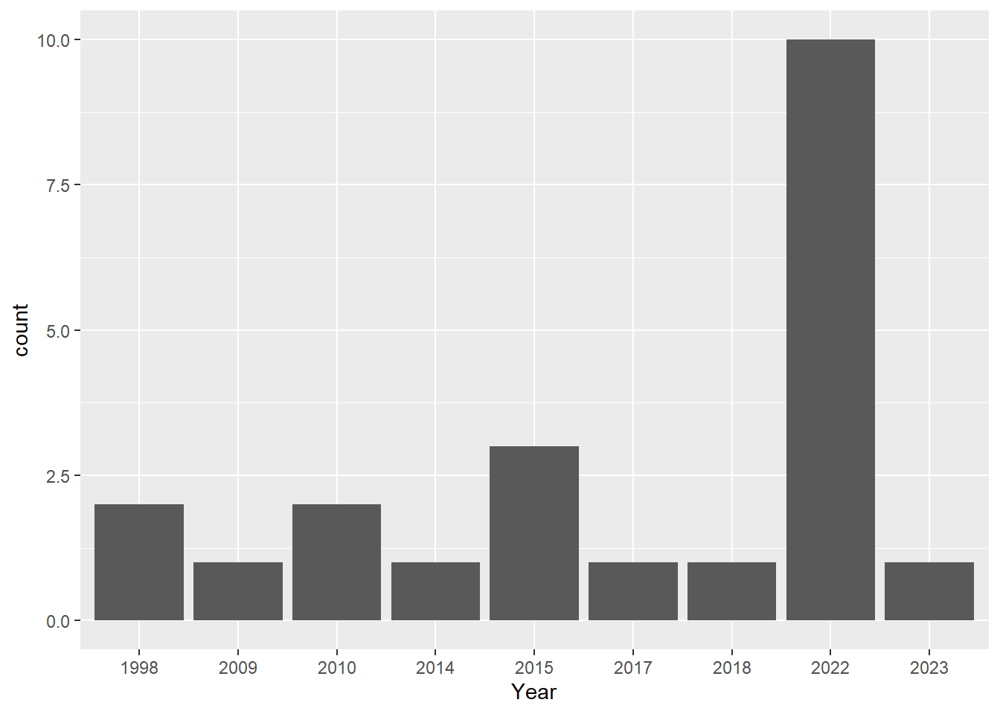
FAST_BY_EVENT %>%
ggplot(., aes(x = Team)) +
geom_bar()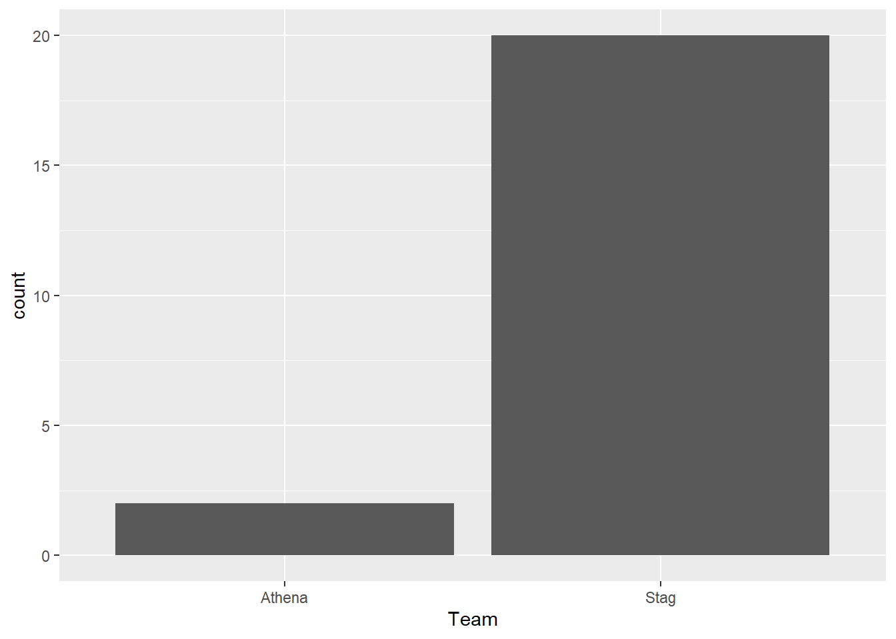
FAST_BY_EVENT %>%
ggplot(., aes(x = Event)) +
geom_bar()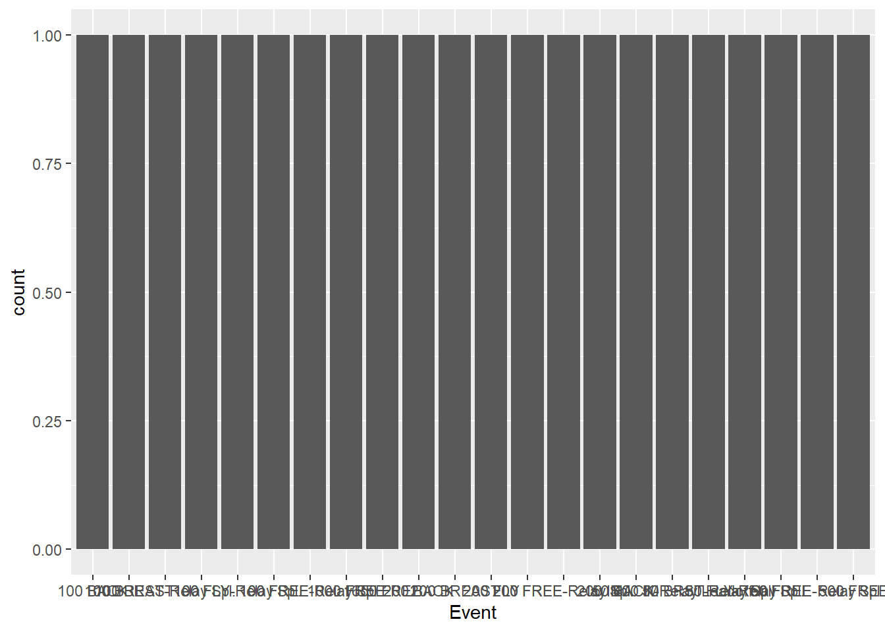
Messy. I am not sure that’s what we want but you get a feel for what geom_bar() is doing.
Let’s pass a variable to y:
FAST_BY_EVENT %>%
ggplot(., aes(y = Team)) +
geom_bar()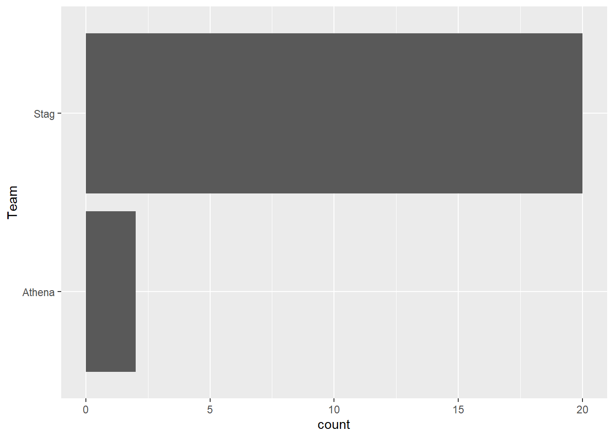
FAST_BY_EVENT %>%
ggplot(., aes(x = Year)) +
geom_bar()
If geom_bar() does inherit x and y from ggplot(), and if you want the heights of the bars to represent values in the data (e.g., “identity”), use geom_bar() and pass stat = "identity"). You should see the same plot as shown with passing only x = Year except for the inclusion of Team information.
FAST_BY_EVENT %>%
ggplot(., aes(x = Year, y = Team)) +
geom_bar(stat = "identity")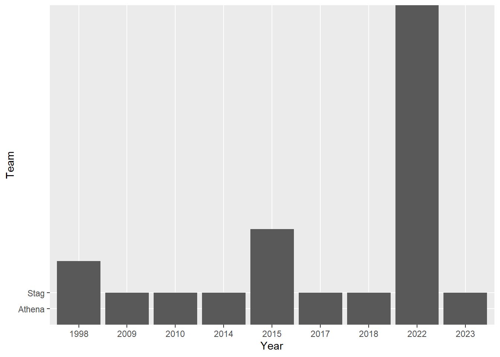
This plot is ugly. We will work on fixing this later but or now understand that geom_bar() and geom_col() differ but can be used to do plot same thing.
geom_col()
Remember that geom_col() takes both an x and a y and plots the height of each x variable bar relative to the value of the y variable.
geom_col(
mapping = NULL,
data = NULL,
position = "stack",
...,
just = 0.5,
width = NULL,
na.rm = FALSE,
show.legend = NA,
inherit.aes = TRUE
)Being verbose:
FAST_BY_EVENT %>%
ggplot(data = .,
mapping = aes(x = Name, y = Time)
) +
geom_col()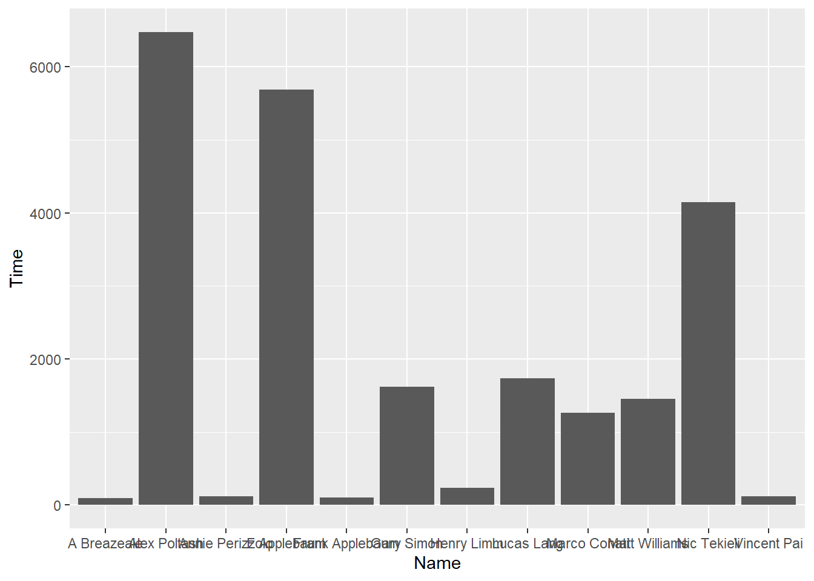
Trimming some code:
FAST_BY_EVENT %>%
ggplot(., aes(x = Name, y = Time)
) +
geom_col()FAST_BY_EVENT %>%
ggplot(., aes(x = Year, y = Team)) +
geom_col()FAST_BY_EVENT %>%
ggplot(., aes(Year, Time)) +
geom_col()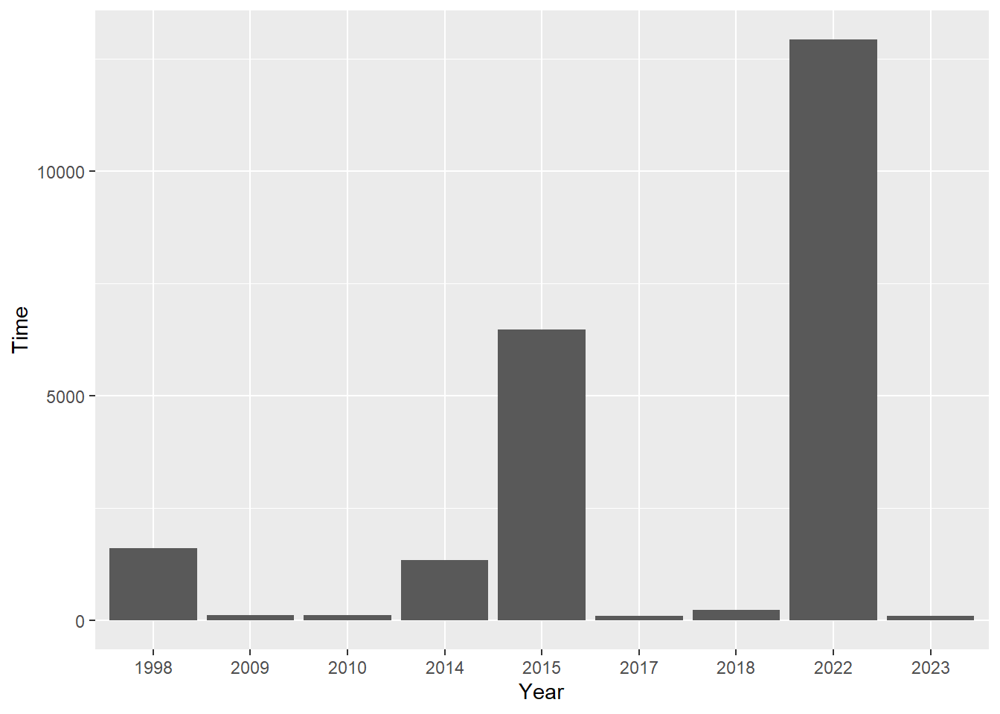
Switching x and y:
FAST_BY_EVENT %>%
ggplot(., aes(x = Team, y = Year)) +
geom_col()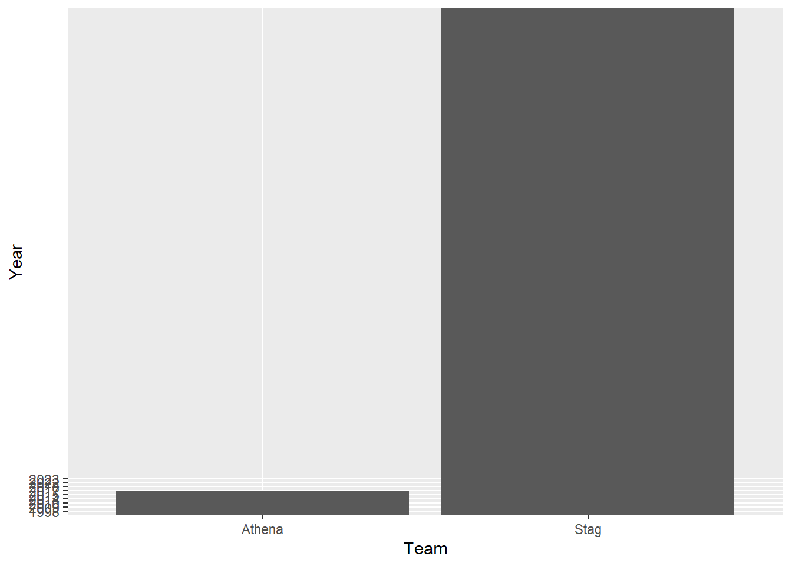
Yuck.
Adding Layers
We can take a plot object and add layers that will override defaults. Let’s assign the plot to an object to make adding some layers easier, though not necessary.
fast_by_event_col <- FAST_BY_EVENT %>%
ggplot(data = .,
mapping = aes(x = Name, y = Time)
) +
geom_col()Add a coord_*() layer, specifically coord_flip() to flip the coordinates. Take object, and add layer using +:
fast_by_event_col +
coord_flip()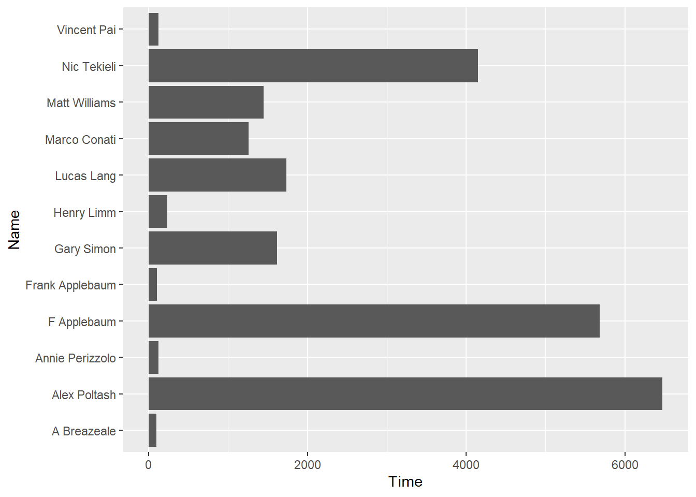
Add a theme() layer:
fast_by_event_col +
coord_flip() +
theme_minimal() 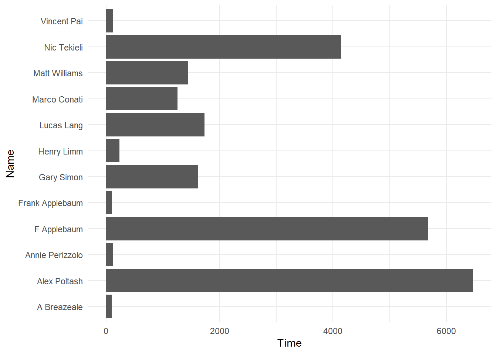
Add label layers:
fast_by_event_col +
coord_flip() +
theme_minimal() +
xlab(" ") +
ylab("Seconds")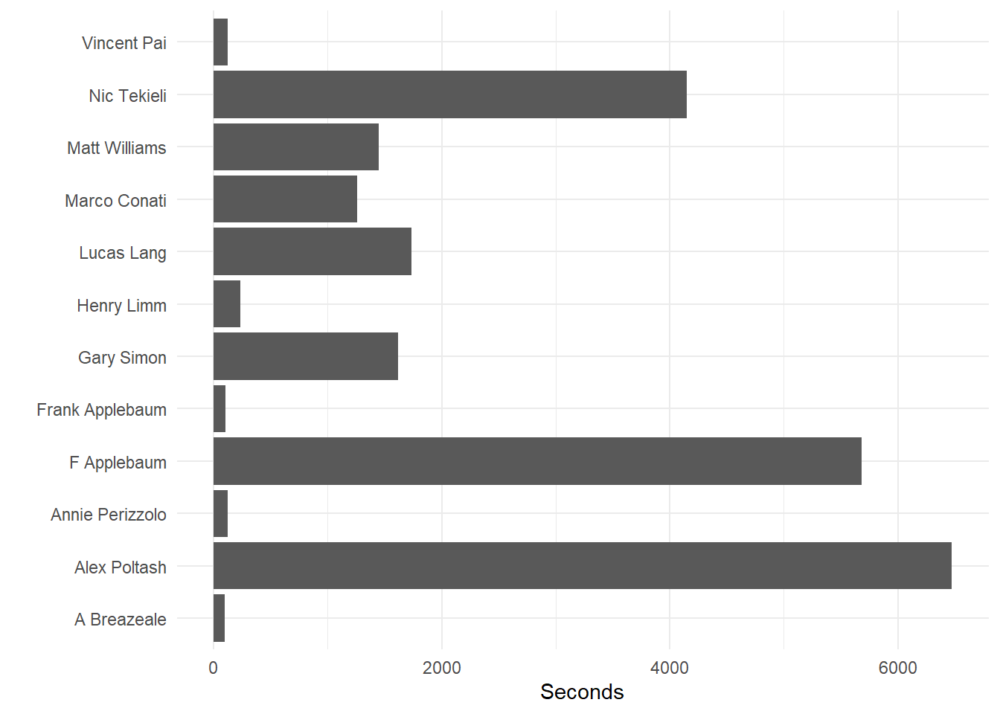
Dot Plot/Point Plot
You can also plot amounts as points. We will add an aesthetic here to color code the points by Team.
(fast_by_event_point <- FAST_BY_EVENT %>%
ggplot(data = .,
mapping = aes(x = Name, y = Time)
) +
geom_point(aes(color = Team)) +
coord_flip() +
theme_classic() +
xlab(" ") +
ylab("Seconds")
)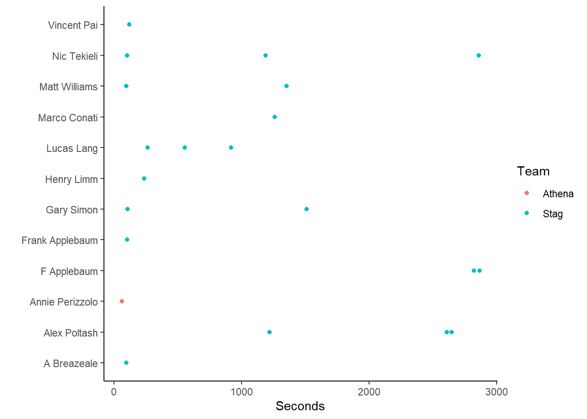
Sub-setting for Plots
Let’s just do for each each team by changing the data frame. There are other ways to address this problem but we will cover those topics later.
FAST_BY_EVENT_TEAM <- SWIM %>%
group_by(., Team, Event) %>%
slice(., which.min(Time)) Filter by Team and Plot:
(fast_be_event_team_col_sta <- FAST_BY_EVENT_TEAM %>%
filter(., Team == "Stag") %>%
ggplot(data = .,
mapping = aes(x = Name, y = Time)
) +
geom_col() +
coord_flip() +
theme_classic() +
xlab(" ") +
ylab("Seconds") +
ggtitle("Fastest Stags for their event since ?")
)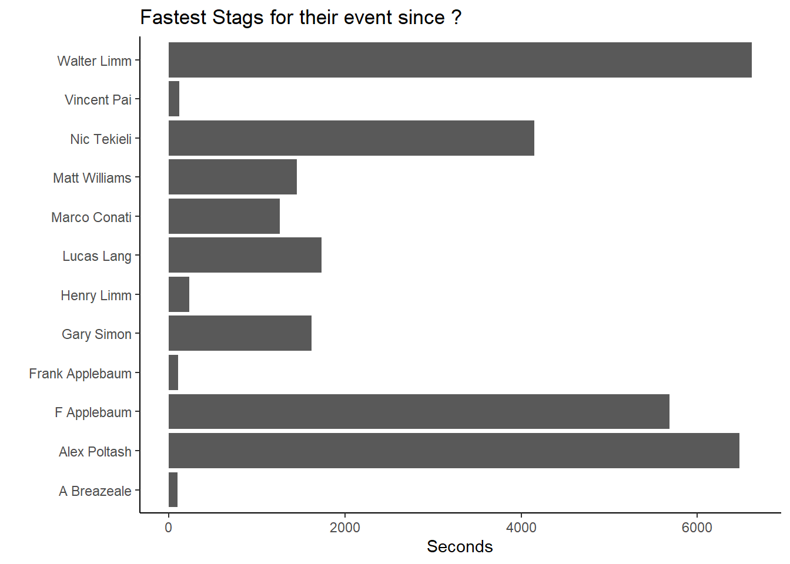
(fast_be_event_team_col_ath <- FAST_BY_EVENT_TEAM %>%
filter(., Team == "Athena") %>%
ggplot(data = .,
mapping = aes(x = Name, y = Time)
) +
geom_col() +
coord_flip() +
theme_classic() +
xlab(" ") +
ylab("Seconds") +
ggtitle("Fastest Athenas for their event since ?")
)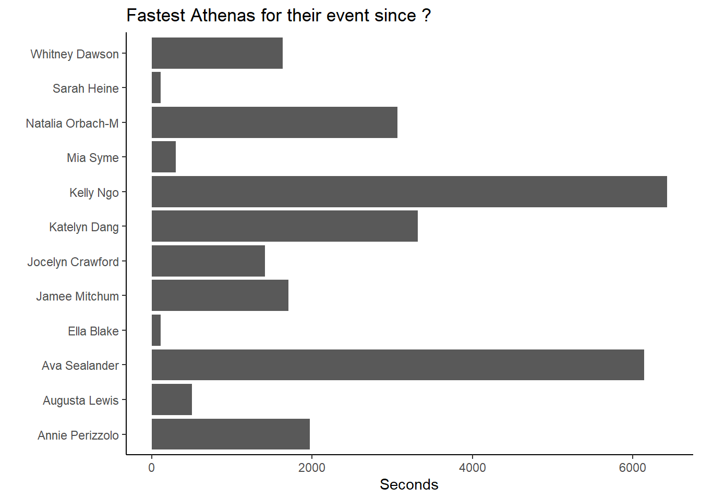
Getting Counts by Summary
Let’s use {dplyr} to help us obtain subgroups.
TOP_BY_YEAR <- SWIM %>%
group_by(., Name, Team) %>%
summarize(., Count = dplyr::n()) `summarise()` has grouped output by 'Name'. You can override using the
`.groups` argument.head(TOP_BY_YEAR)# A tibble: 6 × 3
# Groups: Name [6]
Name Team Count
<chr> <chr> <int>
1 A Breazeale Stag 8
2 A Roeseler Stag 2
3 Aaron Lutzker Stag 6
4 Abel Sapirstein Stag 1
5 Alec Vercruysse Stag 4
6 Alex Mendoza Stag 2Filter for a Team and plot. Again, using geom_bar(stat = "identity") we will plot the actual counts in the data set.
TOP_BY_YEAR %>%
filter(., Team == "Athena") %>%
ggplot(., aes(x = Name, y = Count)) +
geom_bar(stat = "identity") +
coord_flip()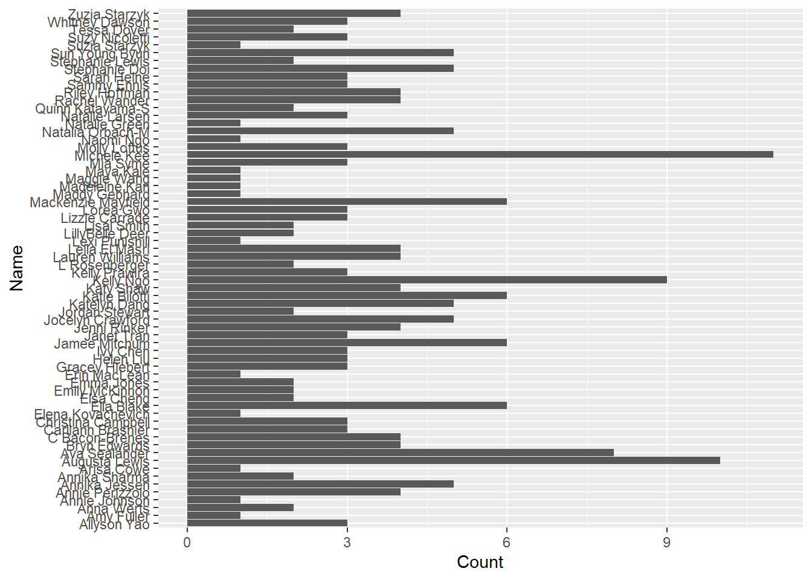
Year with Highest Bests
Let’s work from the top using the full SWIM datat in order to see the full workflow.
- Group by team and event type
- Slice the fastest values
- Then group this data frame by year
- Summarize by counting the rows
- Arrange in descending order
- Create the plot object and map some aesthetics
- Add a geom layer
SWIM %>%
group_by(., Team, Event) %>%
slice(., which.min(Time)) %>%
group_by(., Year) %>%
summarize(., Count = dplyr::n()) %>%
arrange(., desc(Count)) %>%
ggplot(., aes(x = Year, y = Count)) +
geom_point()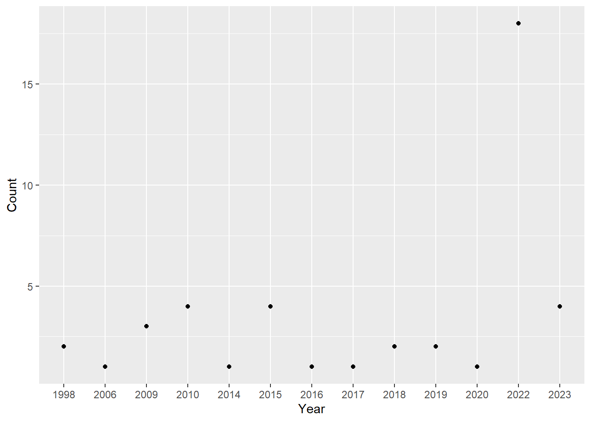
Add another geom layer:
SWIM %>%
group_by(., Team, Event) %>%
slice(., which.min(Time)) %>%
group_by(., Year) %>%
summarize(., Count = dplyr::n()) %>%
arrange(., desc(Count)) %>%
ggplot(., aes(x = Year, y = Count)) +
geom_point() +
geom_col(fill = "gray")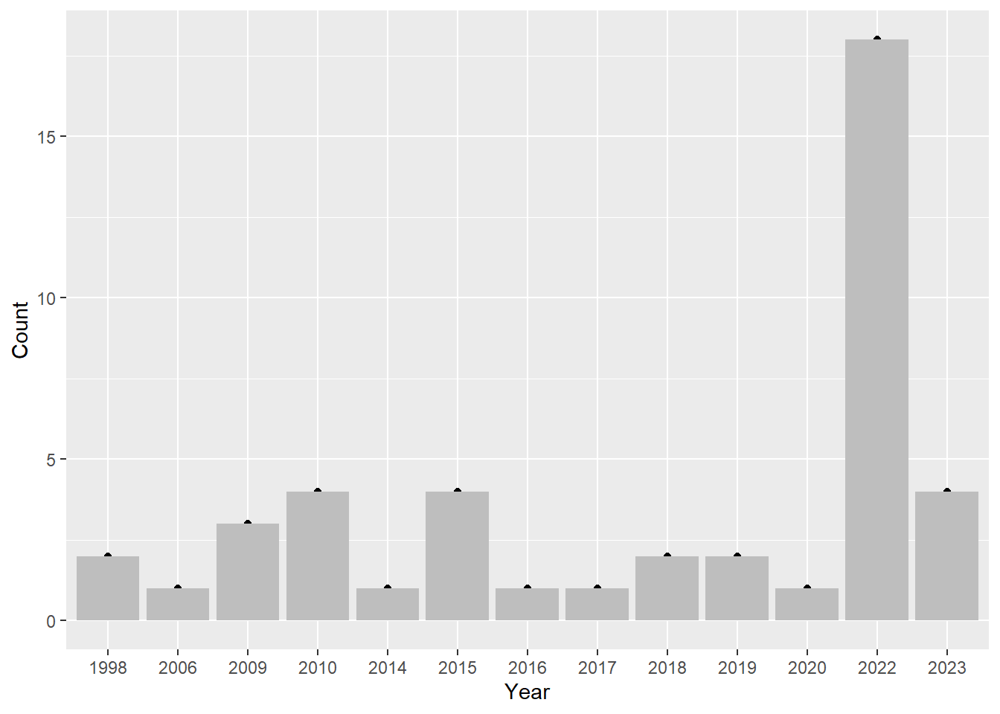
Change the geom layer order and add some color:
SWIM %>%
group_by(., Team, Event) %>%
slice(., which.min(Time)) %>%
group_by(., Year) %>%
summarize(., Count = dplyr::n()) %>%
arrange(., desc(Count)) %>%
ggplot(., aes(x = Year, y = Count)) +
geom_col(fill = "gray", col = "green") +
geom_point(col = "red") 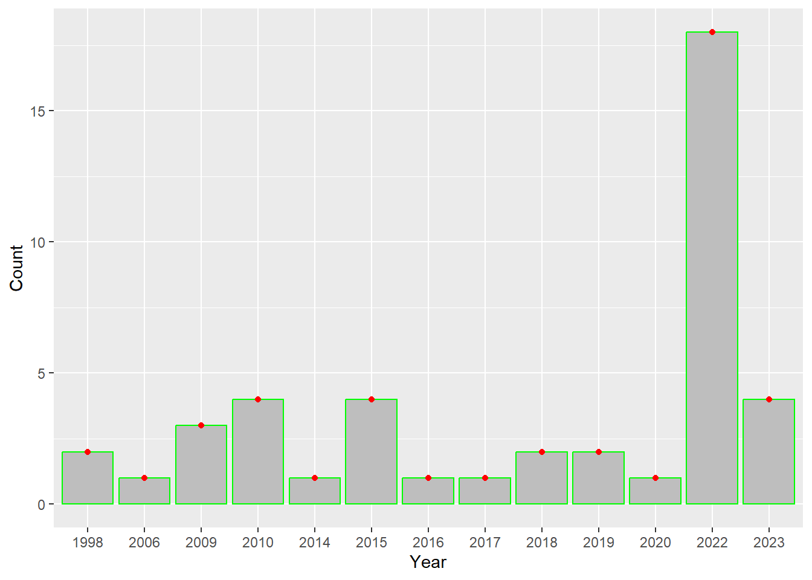
OK, this example is intentionally ugly and likely has different implications for someone who has red-green colorblindness. The point here is to show you a little able plotting amounts. You can also
Lollipop Plot
A lollipop plot is like a bar plot but has less ink information. It will encode the point position as height.
In order to see the variables in the data frame, let’s create it and then assign it to an object first.
DAT <- SWIM %>%
group_by(., Team, Event) %>%
slice(., which.min(Time)) %>%
group_by(., Year) %>%
summarize(., Count = dplyr::n()) %>%
arrange(., desc(Count)) We can use geom_segment() to create a line segment from a starting x and y position to an ending x and y position. We can also flip the coordinates if you want horizontal lines.
DAT %>%
ggplot(., aes(x = Year, y = Count)) +
geom_segment(aes(x = Year,
xend = Year,
y = 0,
yend = Count)) +
geom_point(size = 4, col = "black") +
coord_flip()
Summary
This module was used to help demonstrate a subset of ways to visualize amounts using ggplot()* objects. The examples represent only subset of different plots one could create to communicate amounts visually. In addition, the rendered plots certainly have problems and fixing those problems will be goals of future modules.
Session Information
sessioninfo::session_info()─ Session info ───────────────────────────────────────────────────────────────
setting value
version R version 4.3.1 (2023-06-16 ucrt)
os Windows 11 x64 (build 22621)
system x86_64, mingw32
ui RTerm
language (EN)
collate English_United States.utf8
ctype English_United States.utf8
tz America/Los_Angeles
date 2023-09-15
pandoc 3.1.5 @ C:/PROGRA~1/Pandoc/ (via rmarkdown)
─ Packages ───────────────────────────────────────────────────────────────────
! package * version date (UTC) lib source
D archive 1.1.5 2022-05-06 [1] CRAN (R 4.3.1)
bit 4.0.5 2022-11-15 [1] CRAN (R 4.3.1)
bit64 4.0.5 2020-08-30 [1] CRAN (R 4.3.1)
cli 3.6.1 2023-03-23 [1] CRAN (R 4.3.1)
colorspace 2.1-0 2023-01-23 [1] CRAN (R 4.3.1)
crayon 1.5.2 2022-09-29 [1] CRAN (R 4.3.1)
digest 0.6.33 2023-07-07 [1] CRAN (R 4.3.1)
dplyr * 1.1.2 2023-04-20 [1] CRAN (R 4.3.1)
evaluate 0.21 2023-05-05 [1] CRAN (R 4.3.1)
fansi 1.0.4 2023-01-22 [1] CRAN (R 4.3.1)
farver 2.1.1 2022-07-06 [1] CRAN (R 4.3.1)
fastmap 1.1.1 2023-02-24 [1] CRAN (R 4.3.1)
generics 0.1.3 2022-07-05 [1] CRAN (R 4.3.1)
ggplot2 * 3.4.3 2023-08-14 [1] CRAN (R 4.3.1)
glue 1.6.2 2022-02-24 [1] CRAN (R 4.3.1)
gtable 0.3.4 2023-08-21 [1] CRAN (R 4.3.1)
here 1.0.1 2020-12-13 [1] CRAN (R 4.3.1)
hms 1.1.3 2023-03-21 [1] CRAN (R 4.3.1)
htmltools 0.5.6 2023-08-10 [1] CRAN (R 4.3.1)
htmlwidgets 1.6.2 2023-03-17 [1] CRAN (R 4.3.1)
jsonlite 1.8.7 2023-06-29 [1] CRAN (R 4.3.1)
knitr 1.43 2023-05-25 [1] CRAN (R 4.3.1)
labeling 0.4.2 2020-10-20 [1] CRAN (R 4.3.0)
lifecycle 1.0.3 2022-10-07 [1] CRAN (R 4.3.1)
magrittr * 2.0.3 2022-03-30 [1] CRAN (R 4.3.1)
munsell 0.5.0 2018-06-12 [1] CRAN (R 4.3.1)
pillar 1.9.0 2023-03-22 [1] CRAN (R 4.3.1)
pkgconfig 2.0.3 2019-09-22 [1] CRAN (R 4.3.1)
R6 2.5.1 2021-08-19 [1] CRAN (R 4.3.1)
readr 2.1.4 2023-02-10 [1] CRAN (R 4.3.1)
rlang 1.1.1 2023-04-28 [1] CRAN (R 4.3.1)
rmarkdown 2.24 2023-08-14 [1] CRAN (R 4.3.1)
rprojroot 2.0.3 2022-04-02 [1] CRAN (R 4.3.1)
rstudioapi 0.15.0 2023-07-07 [1] CRAN (R 4.3.1)
scales 1.2.1 2022-08-20 [1] CRAN (R 4.3.1)
sessioninfo 1.2.2 2021-12-06 [1] CRAN (R 4.3.1)
stringi 1.7.12 2023-01-11 [1] CRAN (R 4.3.0)
stringr * 1.5.0 2022-12-02 [1] CRAN (R 4.3.1)
tibble 3.2.1 2023-03-20 [1] CRAN (R 4.3.1)
tidyselect 1.2.0 2022-10-10 [1] CRAN (R 4.3.1)
tzdb 0.4.0 2023-05-12 [1] CRAN (R 4.3.1)
utf8 1.2.3 2023-01-31 [1] CRAN (R 4.3.1)
vctrs 0.6.3 2023-06-14 [1] CRAN (R 4.3.1)
vroom 1.6.3 2023-04-28 [1] CRAN (R 4.3.1)
withr 2.5.0 2022-03-03 [1] CRAN (R 4.3.1)
xfun 0.40 2023-08-09 [1] CRAN (R 4.3.1)
yaml 2.3.7 2023-01-23 [1] CRAN (R 4.3.0)
[1] C:/Users/gcook/_portable_apps/R/R-4.3.1/library
D ── DLL MD5 mismatch, broken installation.
──────────────────────────────────────────────────────────────────────────────